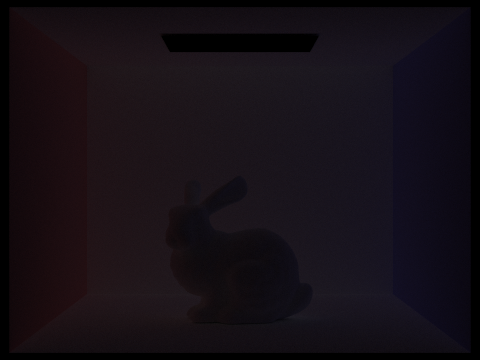
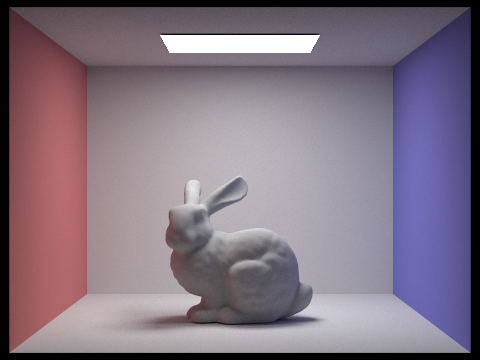

In this project, we built a pathtracer to render images with realistic lighting and shadows. We first implemented algorithms to generate rays that intersect with the scene. By sampling the intersections with triangles and spheres, we are able to collect information about the objects in the scene. To accelerate the intersection sampling process, we used bounding volume hierarchies (BVH) to partition the scene geometry into a hierarchical tree. We constructed the BVH tree, performed intersection tests between rays and the bounding boxes, and traversed the tree and tested the intersection of each BVH's leaf node with the incoming ray.
To take into account the effect of lighting in the scene, we first implemented an algorithm to render the direct illumination, created by combining zero-bounce illumination (light directly from the light source) and one-bounce illumination (light reflected off objects in the scene, resulting in dark shadows). Then, we added the indirect illumination resulting from light recursively bouncing off objects, using random sampling and Monte Carlo integration to estimate radiance. This makes the rendered images look more true to reality, as indirect illumination captures the influence of colors from adjacent surfaces on the color of shadows cast by objects. Because the contribution of higher bounces decreases exponentially, to optimize the process, we included random termination (Russian roulette) to shorten the depth of recursion while maintaining the realism of the rendering.
While Monte Carlo path tracing is powerful to generate realistic images, to further reduce the noise in the rendering, we use adaptive sampling by concentrating sampling in the important areas where the pixels converge quickly.
Combining all of these techniques, we built a pathtracer to render images with different settings set by parameters including number of light bounces and light rays.
Task 1: Generating Camera Rays
The function Camera::generate_ray(...) takes in the normalized image coordinate $(x, y)$ and outputs a Ray in the world space which is generated from the camera perspective. To generate Ray, we first transform $(x, y)$ from image to camera space. The center of the image $(0.5, 0.5)$ is at coordinate $(0, 0, -1)$ in camera space, the bottom left corner $(0, 0)$ is at $(-\tan(\frac{hFov}{2}), -\tan(\frac{vFov}{2}))$, and the top right corner is at $(\tan(\frac{hFov}{2}), \tan(\frac{vFov}{2}))$, where $hFov$ and $vFov$ are field of view angles along the $X$ and $Y$ axis. Thus, we derived the formula $f(x, y) = (\tan(\frac{hFov (x - 0.5)}{2}), \tan(\frac{vFov (y - 0.5)}{2}), -1)$ to transform $(x, y)$ from image space to camera space. Then, we generated the ray in camera space cameraRay with the origin $(0, 0, 0)$.
The $3 \times 3$ rotation matrix c2w in Camera converts a coordinate from the camera to world space and was used in conjunction with translating the point by pos which is the position of the camera in the world. To do this rotation and translation, we created the $4 \times 4$ matrix c2w_full which includes c2w and pos in column 4 as a homogeneous coordinate.
Task 2: Generating Pixel Samples
Given an image, we sample pixels and generate rays to trace the image.
Given the number of camera rays in one pixel along one axis ns_aa, we generate ns_aa random samples, normalizing each one. Using the normalized pixel sample, we generate the camera ray and estimate the scene radiance along the ray. This radiance estimate is then added to the running sum vector v. Once all the random samples are incorporated, we calculate the average pixel color and update the sampleBuffer with the averaged color.
|
Figure 1: banana.dae after task 2 |
Figure 2: CBempty.dae after task 2 |
Task 3: Ray-Triangle Intersection
Ray-triangle intersection can be accomplished by any of the techniques reviewed during earlier homework projects. For this project, we chose to use barycentric coordinates, then extended their functionality by implementing the Moller Trumbore Algorithm. This algorithm will eventually find the alpha, beta, and gamma barycentric parameters and at the same time be able to figure out the intersection point. This functionality is extracted to a function find_t with parameters alpha, beta, gamma. An overload is defined as a helper to ignore these parameters when not needed).
A separate function, t_in_ray tests that the intersection point $t$ is bounded by the min_t and max_t of the ray. This is fed directly into the required function has_intersection(...).
The triangle intersection function intersect(...) performs these same calculations with the addition of the normal at the point of intersection being the barycentrically interpolated normal ($\alpha n_1 + \beta n_2 + \gamma n_3$).
Figure 3: CBempty.dae after task 3
Task 4: Ray-Sphere Intersection
Ray-sphere intersection is governed by the equation $(d \cdot d)t^2 + ((2(o - c) \cdot d) t + ((o - c) \cdot (o - c) - R^2)=0$. To solve this for $t$ we use the quadratic formula. In code, each dot product can be represented using the dot(...) function. To then find the lower and higher intersection points of the parabola, we can take the result from the quadratic formula and divide it into two pieces: t_quad1 and t_quad2. The lower piece, $t_0$, is t_quad1 - t_quad2 while the higher piece, $t_1$ is t_quad1 + t_quad2. This is because t_quad2 is guaranteed to be positive so we know the output will have guaranteed ordering. This function is implemented in a new helper function find_t(...) which returns void but updates the values of two passed variables $t_0$ and $t_1$.
To test intersection we define yet another helper method t_in_ray which tests that both $t_0$ and $t_1$ are bounded by the min_t and max_t of the ray. We do not directly implement this in the required function has_intersection because that function must also set the max_t of the ray to $t_1$ if an intersection is found.
The intersect(...) function performs the same steps as has_intersetion(...) however adds on the initialization of the isect struct. Notably, the normal at point of intersection is defined by (r.at_time(t1) - o) (normalized).
|
Figure 4: CBspheres.dae after task 4 |
Figure 5: CBempty.dae after task 4 |
Figure 6: CBempty.dae after task 4 |
Task 1: Constructing the BVH
To construct the BVH, we define the recursively called function BVHAccel::construct_bvh. We first call this function on the root node, which recursively calls the method again on smaller and smaller chunks of the Primitive listing. In this manner, we construct a binary tree of BVHNode objects which define all primitives in the viewplane. The BVH construction algorithm overall is:
- Expand a single BBox by the BBox of each contained primitive.
- If the number of primitives is less than the max_leaf_size, set the start and end pointers of a new BVHNode and return it. Otherwise, continue.
- Calculate the average centroid by adding together the centroids of all scene primitives and dividing by the number of primitives. We want the average of each primitive object instead of the centroid of the newly created single bounding box so we must loop through the primitives again. We do not do this in the earlier loop to avoid computing the centroid of leaf nodes unnecessarily.
- Choose an axis to split on (i.e. the split_axis). This is computed by taking the axis of maximum extent (from bbox.extent). This is our split heuristic.
- Iterate through all primitive objects in the scene. For each object, if the centroid of the primitive on the split axis is less than the average centroid, we add it to the left child. Otherwise, we add it to the right child. This is done by indexing into the Vector3D, which defines an operator for square bracket indexing given its internal storage mechanism.
- Check to ensure that neither the left nor right child is empty. If either is true, pop off the first element from the non-empty child and push it onto the empty child.
- Recursively call BVHAccel::construct_bvh with the left and right children, then assign the return values to node->l and node->r
Task 2: Intersecting the Bounding Box
To intersect the bounding box, we first apply the bounding box intersection equation on the min and max of the incoming ray: $t=(p’_x \cdot o_x) / d_x$. We then find the vector representing the minimum and maximum of each x, y, and z coordinate. This is accomplished with the helper function inline Vector3D cmp_vector(const double& (*op) (const double&, const double&), Vector3D &v0, Vector3D &v1). This takes in a function called op which takes in two const double references and outputs one const double reference. This is done so that we may dynamically use either std::min or std::max.
To find the two final intersection points, we then define another helper function find_in_vector which again takes a function signature such as std::max or std::min to find the maximum or minimum value in the Vector3D respectively.
The intersection points t0 and t1 are then defined to be valid if $t_0 \le t_1$ and $t_0 < r.max\_t$ and $t_1 > r.min\_t$. The reason we only check the max and min on one of $t_0$ and $t_1$ is that we know if $t_0 \le t_1$ then they are bounded only on one side each. Note that the $\le$ is important instead of $<$ as it includes edge intersections. The effects of excluding this were that certain low-poly scenes may have certain primitives omitted (for example, any CB*.dae file would have only one red triangle on the left side rendered).
Task 3: Intersecting the BVH
To intersect the BVH, we use the Bounding Box (BBox) intersection function defined in the part above. Mainly, we traverse through the BVH and test the intersection of each BVH's leaf node with the incoming ray, then test the intersection of each primitive in that bounding box. This process is enumerated as the following:
- Test if the bounding box of the BVHNode intersects the ray. If it does not, return false immediately. This is an optimization because it means we do not process intersections on objects which will not hit the BBox. Otherwise, continue.
- If the node is a leaf node:
- Loop through the primitives in the BVHNode. Process all intersections. If there are any intersections, store that value in a latching boolean has_isect
- If the ray intersected any primitive, return true (i.e. return has_isect)
- Otherwise, recursively call intersect(...) for the left and right children of the node. Return the OR of these two intersections. These must be called separately and their values stored in variables to avoid short circuit evaluation.
The has_intersection function works in exactly the same manner, except it immediately exits (i.e returns true) if an intersection is found.
Here are some images rendered with the final product that could not be rendered without the BVH acceleration optimization.
 Figure 7: CBlucy.dae after task 2 |
Figure 8: blob.dae after task 2 |
|
Figure 9: wall-e.dae after task 2 |
 Figure 10: maxplanck.dae after task 2 |
The table below shows a comparison between render times of three models. Notably, the BVH optimization increased performance by a factor of 36-143x. There appeared to be a correlation between an increase in performance and models with a greater number of primitives. This is likely because the BVH is allowing us to skip intersection checking of each of these primitives, and as such the increase in performance will be greater if we can skip more intersection checks.
| cow.dae | beetle.dae | teapot.dae | |
| Without BVH | 85.95s | 113.42s | 36.83s |
| With BVH | 1.15s | 0.79s | 1.04s |
Task 1: Diffuse BSDF
The function DiffuseBSDF::f evaluates the Lambertian Bidirectional Scattering Distribution Function (BSDF) by taking in the incident light direction $w_i$ and outgoing light direction $w_o$ at the point of intersection. In the class DiffuseBSDF , Vector3D reflectance stores the albedo for the material which ranges from 0 to 1 in RGB, representing the spectrum of total absorption and total reflection per color channel. Because diffuse BSDF equally reflects light to all directions of the hemisphere, the reflectance should be constant regardless of the point of intersection. To distribute the light over the hemisphere of possible outgoing light directions, we normalize the reflectance by dividing it by $\pi$.Thus, DiffuseBSDF::f returns reflectance $/ \pi$.
To implement DiffuseBSDF::sample_f , we set the value of $w_i$ by taking a sample according to a cosine-weighted hemisphere distribution using CosineWeightedHemisphereSampler3D sampler. Then, we use the function DiffuseBSDF::f to evaluate the Lambertian BSDF given the w_in and w_o .
Task 2: Zero-bounce Illumination
Given Ray &r and Intersection &isect , PathTracer::zero_bounce_radiance returns the light that reaches the camera without bouncing off any of the objects in the scene. Because this is only the light that is coming from the light source, we used the BSDF of the surface at the point of intersection and returned its emission. Then, we updated est_radiance_global_illumination to return the zero-bounce radiance instead of normal shading.
Task 3: Direct Lighting with Uniform Hemisphere Sampling
To implement PathTracer::estimate_direct_lighting_hemisphere , we take num_samples samples of directions in the hemisphere. For each direction, we set w_in to be the sample and convert it to world space using the o2w transform matrix, labeled as w_in_world . Then, we generate a ray at the hit point and assign the min_t of the ray to EPS_F .
If there is an intersection, we calculate the outgoing light by using the reflection estimator equation:
- $f_r := $ Lambertian BSDF calculated from DiffuseBSDF::f from Task 1
- $L_i := $ the incoming light is given by the emission of the intersection’s BSDF.
- $\cos(\theta_j) := $ dot product of w_in_world and the surface normal
- $pdf := \frac{1}{2 \pi} $ because the surface area of a hemisphere is $2 \pi r^2$, so the surface area of a unit hemisphere is $2 \pi$
For each direction that results in an intersection, we sum each $(f \cdot L \cdot cos) / 2 \pi$ value and return the total divided by num_samples.
Task 4: Direct Lighting by Importance Sampling Lights
Importance sampling is similar to the above hemispherical sampling, except it includes point lights and has a different sampler. To accomplish this, we perform the following algorithm:
- Iterate through each of the lights in the scene using an iterator
- Pick a number of samples based on if the light is a delta light. If so, only use one sample. If not, use ns_area_light as in hemispherical sampling.
- For each desired sample:
- Sample an illuminance $L$ and get w_in_world = w2o * w_in. If the $z$ coordinate is positive, continue.
- Set the maximum $t$ of the sample ray to the distance to the light minus some small variance factor EPS_F.
- If the sample ray does not intersect the BVH, continue.
- Add the sampled illuminance to a temporary buffer L_sample
- Average the sampled illuminance, then add it to the output.
- Return the output illuminance of all lights in the source.
Compared to the image rendered with uniform hemisphere sampling, the one using importance sampling has less noise. This is because uniform hemisphere sampling samples uniformly, assuming that light is coming into the scene uniformly from all directions, while importance sampling directly samples light sources. Therefore, it more effectively captures the distribution of light in the scene, leading to a smoother and more accurate rendering.
 Figure 11: CBbunny.dae with hemisphere sampling |
 Figure 12: CBbunny.dae with importance sampling |
|
Figure 13: CBspheres_lambertian.dae with hemisphere sampling |
Figure 14: CBspheres_lambertian.dae with importance sampling |
By taking 1 sample per pixel and adjusting the number of light rays with the -l flag, we can observe the differences in the amount of noise in the results. As the number of light rays increases, more intersections can occur with the scene, meaning that the effects of the lighting and shadows can be better estimated. The shades of gray in the shadows have more nuance, softening the edges of the shadows. As a result, the image becomes smoother.
 Figure 15: CBbunny.dae with $l=1$ |
Figure 16: CBbunny.dae with $l=4$ |
Figure 17: CBbunny.dae with $l=16$ |
 Figure 18: CBbunny.dae with $l=64$ |
Task 1: Sampling with Diffuse BSDF
Same as Part 3 Task 1.
Task 2: Global Illumination with up to N Bounces of Light
To implement PathTracer::est_radiance_global_illumination , we return the sum of the direct illumination found by PathTracer::one_bounce_radiance and indirect illumination found by PathTracer::at_least_one_bounce_radiance .
The function PathTracer::at_least_one_bounce_radiance helps render images with global illumination by computing the one_bounce_radiance and radiance from subsequent bounces, given Ray &r and Intersection &isect. In PathTracer::raytrace_pixel , we set the depth of the ray to be max_ray_depth so that the function will recurse max_ray_depth times.
Here is the basic algorithm to calculate the global illumination in PathTracer::at_least_one_bounce_radiance :
- If isAccumBounces is false, we return one_bounce_radiance(r, isect) .
- If isAccumBounces is true, we add the result of one_bounce_radiance(r, isect) to L_out .
- $f := $ sample from the BSDF.
- Convert the incoming radiance direction to world space.
- Generate a ray sample_ray at hit_p with epsilon offset and decremented depth.
- Check if there is an intersection with sample_ray .
- If there is an intersection, call at_least_one_bounce_radiance with sample_ray which returns $L$, the radiance from all later bounces.
- $\cos(\theta_j) = $ dot product of w_in_world and the surface normal
- $pdf = \frac{1}{\pi} $ to uniformly sample the upper hemisphere.
- We add $(f \cdot L \cdot cos) / pdf$ to L_out and return it.
Using 1024 samples per pixel, we render the following images with global illumination:
|
Figure 19: bench.dae with global illumination |
Figure 20: CBspheres.dae with global illumination |
Figure 21: dragon.dae with global illumination |
Rendered with only direct illumination, the spheres in the following scene cast dark shadows while the light source is bright white. With only indirect illumination, the light source (direct light) is dark while the shadows cast by the spheres are colorful, having been reflected by the pink, purple, and white surfaces.
 Figure 22: CBspheres.dae with direct illumination |
 Figure 23: CBspheres.dae with indirect illumination |
Task 3: Global Illumination with Russian Roulette
By adding Russian roulette (random termination) we optimize the rendering of global illumination by making it so that it can recurse less than max_ray_depth times.
In our implementation, we choose to terminate with probability 0.3. Thus, with probability 0.7, we continue to sample, accumulate the value, and recurse. However, if max_ray_depth > 1, then we recurse regardless of Russian roulette to ensure that we trace at least one indirect bounce.
At $m=0$, all we can see is the point source light. At $m=1$ this light goes away and now we have a directly lit scene. As $m$ increases further (i.e. the 2nd and 3rd bounce of light), the image becomes darker because the light rays hit objects and continue to bounce off of them. This means the "quality" of the image decreases since the whole image becomes darker and is thus less like the ideal image we want to render.
 Figure 24: CBbunny.dae with $m=0$, $o=0$ |
 Figure 25: CBbunny.dae with $m=1$, $o=0$ |
 Figure 26: CBbunny.dae with $m=2$, $o=0$ |
Figure 27: CBbunny.dae with $m=3$, $o=0$ |
 Figure 28: CBbunny.dae with $m=4$, $o=0$ |

Figure 29: CBbunny.dae with $m=5$, $o=0$ |
Compared to rasterized images, global illumination allows us to render images with light affecting the scene. Because light interacts with objects in the scene, the positions of light sources and the camera can be adjusted to create different images, and we see shadows of objects as a result of the light sources. Due to indirect illumination, the light bounces throughout the scene, influencing the colors of the shadows. Overall, the images rendered with global illumination look more three-dimensional by accounting for the contribution of light in the scene.
With isAccumBounces set to true (i.e. -o 1) we instead get the below results for CBbunny.dae. With $m = 0$, we see the zero-bounce illumination, and with $m = 1$, we see the direct illumination. The image becomes brighter with every bounce since we accumulate the illuminance of said bounces. Notably, the periphery becomes brighter as the indirect lighting is that which continues to bounce primarily. We also see the greatest increase in brightness between $m=1$ and $m=2$, because as before this is the threshold of indirect light bouncing.
 Figure 30: CBbunny.dae with $m=0$, $o=1$ |
 Figure 31: CBbunny.dae with $m=1$, $o=1$ |
 Figure 32: CBbunny.dae with $m=2$, $o=1$ |
Figure 33: CBbunny.dae with $m=3$, $o=1$ |
Figure 34: CBbunny.dae with $m=4$, $o=1$ |
 Figure 35: CBbunny.dae with $m=5$, $o=1$ |
The images below show CBbunny.dae with Russian Roulette. Visually there is no large change. Some images may have slightly different rays traced than others (appearing as an increase in noise), however the main effect of Russian Roulette is that it will speed up render times for many samples per pixel.
 Figure 36: CBbunny.dae with $m=0$ + Russian Roulette |
Figure 37: CBbunny.dae with $m=1$ + Russian Roulette |
 Figure 38: CBbunny.dae with $m=2$ + Russian Roulette |
 Figure 39: CBbunny.dae with $m=3$ + Russian Roulette |
Figure 40: CBbunny.dae with $m=4$ + Russian Roulette |

Figure 41: CBbunny.dae with $m=100$ + Russian Roulette |
The renders of CBspheres_lambertian.dae below showcase that as $s$ increases, the image becomes less noisy. In effect, more light is being traced so it will end up intersecting more components of the geometry of the scene. We see the greatest increase in quality between $s=1$ and $s=8$, with diminishing returns up to $s=64$. After this point, the quality increase is somewhat negligible and not visible unless specifically compared.
|
Figure 42: CBsphres.dae with $s=1$ |
 Figure 43: CBsphres.dae with $s=2$ |
Figure 44: CBsphres.dae with $s=4$ |
 Figure 45: CBsphres.dae with $s=8$ |
Figure 46: CBsphres.dae with $s=16$ |
 Figure 47: CBsphres.dae with $s=64$ |
 Figure 48: CBsphres.dae with $s=1024$ |
Adaptive sampling is a technique that allows us to vary the amount of samples used based on the complexity of the portion of the image being rendered. This means the number of samples desired becomes the maximum number of samples, as for each sample location we may choose to end early. This is governed by the convergence $I=1.96 \cdot \sigma / \sqrt{n}$. If $I \le maxTolerance \cdot \mu$, then we assume it has converged and we can end the sampling early. Importantly, $\mu=s_1/n$ and $\sigma^2=(s_2 - s_1^2/n) / (n - 1)$ where $s_1=\Sigma_{k=1}^n x_k$ and $s_2=\Sigma_{k=1}^n x_k^2$.
To implement this, we inserted a condition into the raytrace_pixel function which checks if the current pixel is on a samplesPerBatch boundary to avoid checking every single sample. If so, we compute the above mathematical quantities. If we determine the sample has converged, we break from the loop. We also change the number of pixels to average from ns_aa to some quantity $n$, which is the number of samples actually taken. We also update a new sampleCountBuffer with this value $n$ for the given pixel coordinates.
|
Figure 49: CBbunny.dae with adaptive sampling (output) |
Figure 50: CBbunny.dae with adaptive sampling (rate) |
|
Figure 51: wall-e.dae with adaptive sampling (output) |
Figure 52: wall-e.dae with adaptive sampling (rate) |